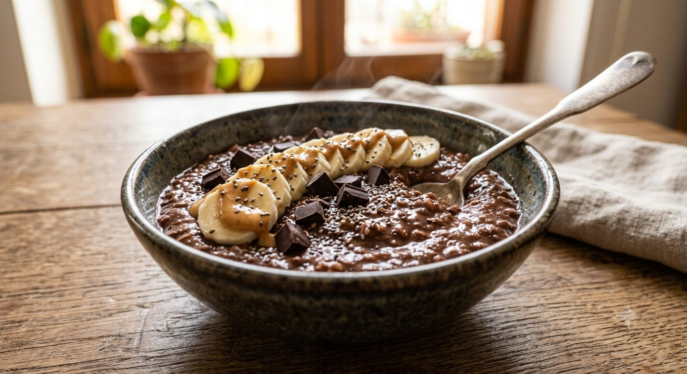

Gachas de Avena al Chocolate
BLa versión chocolatera de las gachas clásicas: cacao puro sin azúcar, plátano, crema de cacahuete y unos trocitos de chocolate negro. Sabor a golosina, sin azúcar añadido.
El cacao puro en polvo aporta todo el sabor a chocolate sin nada de azúcar añadido, y con una cantidad de fibra excepcional. El plátano machacado endulza la mezcla de forma natural, sin necesidad de azúcar ni miel. La crema de cacahuete y el chocolate negro por encima son el toque más indulgente de la receta —por eso la calificamos con B, igual que las Crumbl Cookies o las Gachas Dulces—, pero siguen siendo comida real: nada de chocolate con leche ni cacaos solubles azucarados.
Ingredientes (toca el nombre para ver su ficha)
- 75 g
- 300 g
- 100 g
- 15 g
- 60 g
- 15 g
- 15 g
Elaboración
- Cuece la avena con la bebida de avena y el agua, 6-7 minutos a fuego medio, removiendo.
- Añade el cacao en polvo y remueve hasta que se disuelva bien.
- Machaca la mitad del plátano e incorpóralo a la avena para endulzarla; corta el resto en rodajas.
- Sirve con el plátano en rodajas, la crema de cacahuete y el chocolate negro troceado por encima.
Información nutricional (receta completa)
De las grasas, 8 g son saturadas · de los carbohidratos, 11.5 g son azúcares · sodio: 14.1 mg
Preguntas frecuentes
¿Cuántas calorías tiene la receta de Gachas de Avena al Chocolate?
Esta receta tiene 692.3 kcal en total (1 ración).
¿Es una receta vegana?
Sí, todos los ingredientes son de origen vegetal.
¿Es apta sin gluten?
La avena no contiene gluten de forma natural, pero conviene comprarla certificada sin gluten si hay sensibilidad, por la contaminación cruzada habitual en su procesado.
¿Puedo sustituir la crema de cacahuete si tengo alergia a los frutos secos?
Sí, puedes usar tahini (crema de sésamo) o simplemente omitirla; el sabor a chocolate seguirá estando presente por el cacao puro.